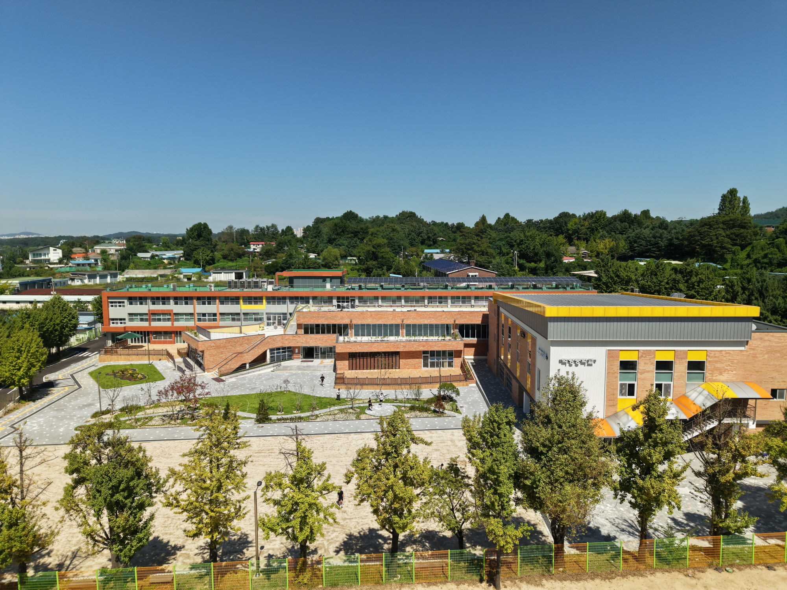
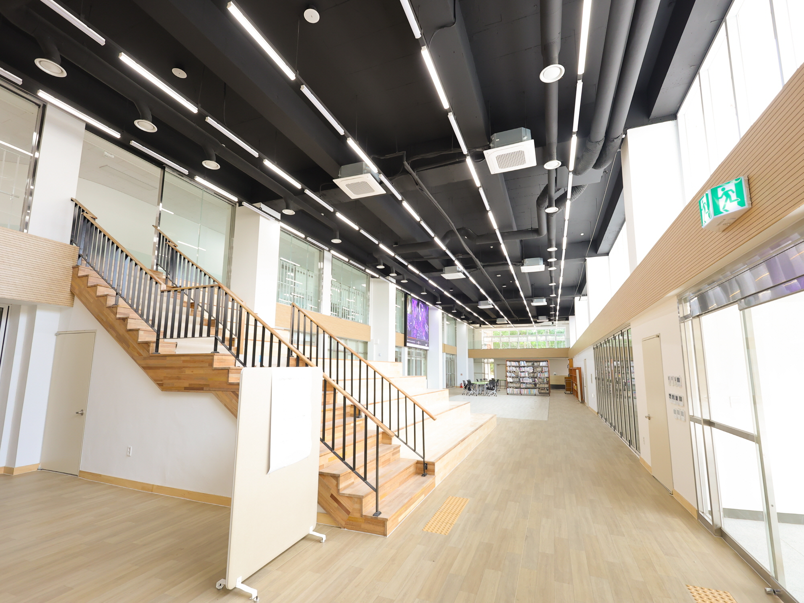

덕양중학교 공간재구조화 리모델링 및 증축공사
덕양중학교는 한때 학생 수 감소로 폐교 위기에 놓였으나, 지역사회와 학교 구성원의 자발적인 참여를 통해 다시 ‘찾아오는 학교’로 변화해온 사례이다. 교사와 학생 간의 일상적인 소통, 학생·학부모·교직원이 함께 학교 운영에 참여하는 문화는 덕양중학교만의 개방적이고 자율적인 교육 환경을 형성해왔다.
본 계획은 이러한 학교 문화가 공간에서도 자연스럽게 드러나도록 하는 데에서 출발하였다. 실내와 외부의 경계를 최소화하여 교실과 마당, 복도와 공용공간이 유연하게 연결되도록 계획하였으며, 낮은 창턱과 넓은 개구부를 통해 학생들의 시선과 동선이 자연스럽게 외부로 확장되도록 하였다.
증축동의 중심에는 2개 층을 관통하는 광장형 공간을 배치하였다. 이 공간은 특별교실과 도서관을 연결하는 학교의 중심 영역으로, 공연, 전시, 식사, 독서 등 다양한 활동이 일상적으로 이루어지는 다목적 공간이다. 학습과 휴식, 교류가 특정 프로그램에 한정되지 않고 유연하게 이루어지도록 계획하였다.
증축동은 낮고 길게 배치하여 주변 환경과 조화를 이루도록 하였으며, 정문 접근부에는 사선으로 열리는 출입구를 두어 방문 동선을 명확히 하고 학교의 개방적인 인상을 강화하였다. 출입부는 상부 층과 직접 연결되어 이동의 효율성을 높이고 내부 공간의 시각적 연속성을 확장한다.
2층과 3층에는 외부 마당과 직접 연결되는 테라스를 마련하여 학생들이 1층으로 내려오지 않고도 외부 공간을 일상적으로 이용할 수 있도록 하였다. 수업과 휴식, 실내와 외부의 경계가 완화되며, 자연과 함께하는 학습 환경이 형성된다.
기존 교사동은 단열 및 창호 개선을 중심으로 리모델링하여 성능을 보완하였고, 외장재는 기존 건물의 벽돌 색감과 질감을 계승하여 증축동과의 연속성을 확보하였다. 이를 통해 학교 전체가 하나의 통합된 공간으로 인식되도록 계획하였다.
본 프로젝트는 단순한 시설 개선을 넘어, 덕양중학교가 지켜온 교육 문화와 공동체의 가치를 공간적으로 뒷받침하는 학습 환경을 제안하고자 한다.

